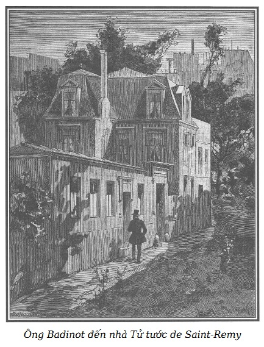

Chúng ta hãy đến trước ông Badinot vài giờ khi ông này từ ngõ hẹp Brasserie vội vã đến nhà Tử tước de Saint-Remy.

.Ông Tử tước này, như chúng ta đã biết, sống một mình trong ngôi nhà nhỏ xinh đẹp, có sân, có vườn ở phố Chaillot. Đây là một khu phố hiu quạnh, mặc dù nằm kề ngay Champs-Élysées, nơi dạo chơi hợp thời nhất Paris.
Cũng chẳng cần phải nêu ra những lợi thế mà ông de Saint-Remy, con người đặc biệt nhiều may mắn, có thể thu lượm được từ vị trí của một nơi ở khéo lựa chọn như vậy. Chỉ cần nói đến việc một người đàn bà có thể rất nhanh chóng lọt vào nhà ông ta qua một cái cổng hẹp của một khu vườn rộng thông với một phố nhỏ tuyệt đối vắng lặng nối liền phố Marbeuf với phố Chaillot.
Sau nữa, bởi một sự tình cờ kỳ diệu, một trong những cơ sở trồng hoa tuyệt đẹp ở Paris cũng có, trong ngõ hẹp hẻo lánh này, một lối đi ít khách vãng lai. Những vị khách nữ bí ẩn của ông de Saint-Remy, gặp trường hợp bất ngờ hoặc gặp gỡ đột ngột, có thể được trang bị bởi một lý do hoàn toàn có thể chấp nhận được khi lui tới ngõ hẻm tai hại này.
Họ đi tìm (họ có thể thác cớ ra thế) những danh hoa dị thảo ở nhà một người làm vườn trồng hoa nổi tiếng có những nhà gương trồng cây mùa đông xinh đẹp.
Vả chăng những khách nữ tươi tắn ấy cũng chỉ nói dối một phần nào mà thôi. Ông Tử tước, có thừa thiên bẩm trong những sở thích xa hoa đặc biệt, có một nhà gương chạy dài một đoạn theo ngõ hẻm này, cái cổng hẹp bí mật đi vào khu vườn mùa đông tuyệt diệu này dẫn đến một khuê phòng ở tầng trệt ngôi nhà.
Như vậy, không cần dùng lối so sánh bóng bẩy, có thể nói rằng một người phụ nữ khi vượt qua ngưỡng cửa nguy hiểm này để vào nhà ông de Saint-Remy, đã bước đến chỗ hư hỏng qua một con đường đầy hoa, bởi lẽ, nhất là về mùa đông, hai bên con đường rất lịch sự này đầy những bụi hoa sặc sỡ tỏa hương ngào ngạt.
Bà de Lucenay, cả ghen như một người phụ nữ trong cơn say đắm, đã yêu cầu cửa này phải có khóa.
Sở dĩ chúng tôi nhấn mạnh đôi chút đến nét tổng thể của nơi cư trú đặc biệt này là bởi có thể nói nó phản ánh cuộc sống sa đọa, rất may là ngày càng hiếm dần, nhưng vẫn cứ phải nêu lên như một điều kỳ cục của thời đại, chúng tôi muốn nói đến sự tồn tại của những người đàn ông đối với phụ nữ không khác gì những gái điếm đối với nam giới. Không cách nào khác, chúng tôi gọi những con người này là những đĩ đực, nếu có thể nói như vậy.
Bên trong ngôi nhà của ông de Saint-Remy, vì thế, có một dáng vẻ kỳ dị, hay nói đúng hơn, ngôi nhà này chia làm hai khu vực hoàn toàn khác biệt.
Tầng trệt là nơi chủ nhân tiếp khách nữ.
Tầng gác thứ nhất là nơi ông ta tiếp bạn làng chơi, bạn chè chén, bạn săn bắn, bọn người mà chúng ta có thể gọi chung là bạn thân tình.
Bởi vậy ở tầng trệt có một phòng ngủ bên trong toàn bằng vàng, gương soi, hoa lá, xa tanh và rèm thêu, một phòng nhỏ chơi nhạc trong đó có một thụ cầm và một dương cầm (ông de Saint-Remy là một tay chơi nhạc tuyệt vời), một phòng tranh và trưng bày vật lạ, khuê phòng thông với nhà gương, một phòng ăn cho hai người, có lối đi riêng để dọn bàn, một phòng tắm là mô hình hoàn chỉnh của sự xa hoa và cầu kỳ theo kiểu phương Đông và ngay đấy là một thư viện nhỏ một phần tạo thành theo danh mục mà La Mettrie đã chọn lựa cho Frédéric đại đế.
Cũng chẳng cần phải nói là tất cả những phòng này được bày biện một cách thanh nhã, cầu kỳ, có những bức tranh của Watteau không mấy ai biết tới, của Boucher hoàn toàn mới mẻ, những món đồ sứ không men hoặc bằng đất nung của Clodion, và trên những đế bằng vân thạch hoặc bằng đá kết cổ, một vài phiên bản quý giá những quần tượng đẹp nhất của Viện bảo tàng bằng đá hoa trắng. Thêm vào đó, vào mùa hè, để làm phối cảnh, khu vườn um tùm xanh tốt đầy chim lạ, hoa tươi và được tưới mát bằng dòng suối nhỏ từ trên một tảng đá đen mang hương vị đồng quê đổ xuống, lấp lánh như một dải sa bạc, trải rộng trên thảm cỏ non xanh rợn, rồi tan ra thành một màn mỏng óng ánh như khảm xà cừ vào một hồ nước trong veo, có những con thiên nga xinh đẹp lượn qua lượn lại nhịp nhàng, duyên dáng.
Rồi khi bóng đêm ấm áp và thanh khiết buông xuống, bao hình bóng, hương hoa và tĩnh lặng tràn ngập trong các khóm cây thơm ngát mà lá cành rậm rạp phủ che như tán lọng, trên những chiếc sofa cổ kính bện bằng cói và bằng dây thừng Ấn Độ.
Về mùa đông, trái lại, trừ cánh cửa kính thông với lồng kính, tất cả đều khép kín. Các tấm mành bằng lụa trong suốt, hệ thống ren của các bức rèm khiến cho ánh sáng khi mờ khi tỏ. Trên tất cả đồ đạc là các lùm cây xứ lạ, dường như phọt ra từ những chiếc bình lớn óng ánh men vàng.
Tại nơi ẩn dật yên tĩnh này, đầy hoa thơm, tranh quý, người ta hít thở một bầu không khí ân tình ngây ngất nhấn chìm tâm hồn và các giác quan vào những đắm say nồng cháy.
Sau cùng, để tăng phần trang trọng cho cái đền đài được xây theo lối trữ tình cổ kính hoặc các vị thần thời cổ, một người trai trẻ, xinh đẹp, phong nhã và lịch sự, vừa sắc sảo vừa dịu dàng, vừa mơ mộng vừa phóng đãng, khi thì cười cợt vui đùa như điên loạn, khi thì chan chứa say mê duyên dáng, nhạc sĩ tuyệt vời có giọng hát ngân vang say đắm mà mọi phụ nữ khi nghe đều không khỏi cảm thấy xúc động sâu xa, gần như thể sau tất cả, đó là một con người đa tình, mãi mãi đa tình. Tử tước là như thế đấy!
Ở thành Athens xưa, có thể ông ta sẽ được hoan nghênh, tán tụng, suy tôn ngang tầm Alcibiade, nhưng ở thời đại chúng ta, vào thời điểm câu chuyện diễn ra, thì Tử tước chỉ còn là một kẻ dối trá ti tiện, một tên lừa gạt thấp hèn.
Tầng gác thứ nhất của ngôi nhà này, trái lại có một dáng vẻ thật hùng tráng.
Chính tại nơi đây, ông ta tiếp đón đông đảo bạn bè hầu hết thuộc loại thanh lịch.
Ở đây, chẳng có gì đỏm dáng, cũng chẳng có gì ẻo lả. Một kiểu bày biện đơn giản trang nghiêm, đồ vật trưng bày là những thứ vũ khí đẹp, những bức vẽ ngựa đua từng đem về cho Tử tước rất nhiều bình vàng bạc lộng lẫy đặt trên tủ, trên bàn. Phòng hút thuốc và phòng chơi kề ngay bên phòng ăn nhộn nhịp, nơi đây tám người (số khách ăn hết sức hạn chế mỗi khi có một bữa ăn của tầng lớp trí thức) đã nhiều lần được thưởng thức tài nghệ của đầu bếp và cả hầu rượu không kém phần giá trị của Tử tước, trước khi cùng Tử tước bước vào cuộc sát phạt bài tây chơi tay tư phải đặt tới năm đến sáu trăm đồng louis, hoặc âm ỉ lắc chiếc cốc gieo xúc xắc bọc trong một mảnh vải nhiễu.
Sau khi đã trình bày hai sắc thái khá khác biệt trong căn nhà của ông de Saint-Remy, xin mời các bạn đọc hãy theo chúng tôi đến những nơi sâu hơn, vào trong sân để xe và bước lên chiếc thang nhỏ dẫn đến một căn nhà đầy đủ tiện nghi của Edwards Patterson, người phụ trách chuồng ngựa của ông de Saint-Remy.
Người đánh xe ngựa nổi tiếng đó mời ông Boyer, người hầu buồng thân tín của Tử tước, dùng bữa trưa. Lúc cô hầu bàn người Anh xinh đẹp đã lui ra sau khi đưa ấm trà vào, trong phòng chỉ còn lại hai nhân vật.
Edwards khoảng bốn mươi tuổi, chưa một người đánh xe ngựa nào khéo léo, to lớn bệ vệ hơn trên chiếc ghế xe rên rỉ như thế, với một bộ mặt đỏ au dưới bộ tóc giả trắng phau biết cách nắm giữ trong tay trái chùm dây cương một cách thanh nhã như thế. Vốn là tay sành ngựa như Tatersail ở London, thời thanh niên cũng là huấn luyện viên có hạng như ông già Chittney nổi tiếng, Tử tước đã tìm thấy ở Edwards một người đánh xe ngựa tuyệt vời, có thừa khả năng điều khiển việc luyện tập vài con ngựa đua, mà ông ta nuôi để đánh cược.
Edwards, mỗi khi không trải bộ chế phục màu nâu có ngù bạc trên tấm vải trùm ngựa có gắn huy hiệu của chiếc ghế xe, rất giống một chủ trang viên hiền lành ở nước Anh. Chúng tôi giới thiệu anh ta với bạn đọc qua cái bề ngoài này, không quên thêm rằng đằng sau bộ mặt to lớn và đỏ au, có thể đoán ra nét quỷ quyệt tàn nhẫn và quái ác của một tay lái ngựa.
Ông Boyer, thực khách của Edwards và là hầu buồng thân tín của Tử tước, là một người cao lớn thanh mảnh, tóc hoa râm và phẳng, trán hói, đôi mắt sắc sảo, vẻ mặt lạnh lùng kín đáo và dè dặt. Ông ta diễn đạt bằng những từ chọn lọc, có những cung cách lịch sự, hoạt bát, hơi văn hoa, có tư tưởng chính trị bảo thủ và có thể đảm nhiệm tuyệt vời vai trò người kéo vĩ cầm trong khúc nhạc tứ tấu của những tay tài tử, thỉnh thoảng lại trịnh trọng bỏ một nhúm thuốc lá đựng trong hộp thuốc thếp vàng nạm ngọc quý… sau đó đưa lưng bàn tay cũng được chăm chút như bàn tay của chủ, để giũ nhẹ những nếp gấp trên chiếc sơ mi vải Hà Lan loại tốt.
– Ông bạn Edwards thân mến, – Boyer bắt đầu câu chuyện – ông có thấy là cô Betty, giúp việc cho ông, nấu ăn theo kiểu dân thị trấn rất khá không?
– Quả vậy, đấy là một cô gái ngoan, – Edwards trả lời bằng tiếng Pháp rất thành thạo – tôi sẽ đem theo cô ta giúp việc trong hãng của tôi, nếu tôi quyết định lập hãng riêng. Và nhân đây, chỉ có hai ta, ông Boyer thân mến, chúng ta hãy bàn việc làm ăn, ông đã thành thạo rồi đấy chứ?
– Tôi ấy à, cũng có hiểu chút ít. – Boyer khiêm tốn trả lời và lấy thêm một nhúm thuốc. – Điều ấy tự nhiên học được thôi, trong lúc đi lo công việc cho người khác.
– Vậy tôi muốn xin ông một lời khuyên rất quan trọng. Chính vì thế hôm nay tôi mời ông đến uống trà.
– Xin sẵn sàng phục vụ ông, ông Edwards thân mến ạ!
– Ông cũng đã rõ, ngoài những con ngựa đua, tôi đã nhận khoán với ông Tử tước về khoản bảo dưỡng toàn bộ chuồng ngựa của ông ấy, cả người lẫn vật, nghĩa là tám con ngựa và năm hoặc sáu thanh niên và người giữ ngựa, mỗi năm là hai mươi tư nghìn franc, kể cả tiền công của tôi.
– Như thế là phải chăng.
– Ông Tử tước đã thanh toán cho tôi sòng phẳng bốn năm, nhưng vào khoảng giữa năm ngoái, ông ấy bảo tôi: “Edwards ạ, tôi nợ ông khoảng hai mươi tư nghìn franc. Ông ước tính xem, ngựa và xe của tôi, giá thấp nhất khoảng bao nhiêu?” – “Thưa ông Tử tước, tám con ngựa ấy, rẻ cũng phải ba nghìn franc mỗi con, con này bù con nọ, và như thế là quá rẻ (và thật như thế, ông Boyer ạ, vì cặp ngựa kéo xe bốn bánh cao và nhẹ, giá đã là năm trăm guinée), như vậy là đã hai mươi tư nghìn franc về khoản tiền ngựa rồi. Còn về xe, thì có bốn cỗ, hãy cho là mười hai nghìn franc cộng với hai mươi tư nghìn franc, vị chi là ba mươi sáu nghìn franc.” Ông Tử tước bảo tôi: “Vậy thì, ông hãy mua tất cả ngựa, xe cho tôi với giá ấy, với điều kiện là khoản tiền tôi mượn trước của ông đã trả đủ, còn mười hai nghìn franc ông phải trả cho tôi thì ông tiếp tục bảo dưỡng và để tôi quyền sử dụng tất cả ngựa, xe và người phục vụ trong sáu tháng nữa.”
– Và ông đã khôn ngoan chấp nhận giao kèo ấy phải không, ông Edwards? Đấy là một món hời lớn.
– Nhất định thế rồi! Chỉ còn mười lăm ngày nữa là hết hạn sáu tháng, tôi sẽ có toàn quyền sở hữu ngựa và xe.
– Không còn gì giản đơn hơn. Văn kiện đã được ông Badinot, nhà kinh doanh của Tử tước, soạn thảo. Vậy ông cần đến những lời khuyên của tôi về vấn đề gì?
– Tôi phải làm gì đây? Bán cả ngựa và xe với lý do là ông Tử tước ra đi, như thế sẽ rất dễ dàng, bởi vì Tử tước đã nổi tiếng là tay chơi loại cừ ở Paris, hoặc giả tôi nên lập hàng mua bán ngựa, với chuồng ngựa của tôi sẽ rất thuận lợi lúc khởi đầu. Ông khuyên tôi nên như thế nào?
– Tôi khuyên ông hãy làm như chính tôi làm.
– Thế nào kia?
– Tôi cũng ở trong tình trạng hệt như ông.
– Ông ấy à?
– Ông Tử tước không ưa những chuyện vụn vặt. Khi tôi vào làm ở đây, tôi có một số tiền tiết kiệm và tài sản cha mẹ để lại khoảng sáu mươi nghìn franc. Tôi đã giữ việc chi tiêu trong nhà cũng như ông giữ chuồng ngựa, hằng năm ông Tử tước đã hoàn tiền cho tôi mà chẳng cần xem xét lại. Vào khoảng cùng thời gian với ông, tính ra phần của tôi khoảng hai mươi nghìn franc, còn phần những người bán hàng khoảng sáu mươi nghìn franc. Thế là ông Tử tước đề nghị với tôi như đã đề nghị với ông là để hoàn lại số tiền cho tôi, ông sẽ bán hết cho tôi đồ đạc trong nhà, kể cả những đồ bạc rất đẹp, những bức tranh rất quý… Tất cả trị giá khoảng một trăm bốn mươi nghìn franc. Phải trả nợ tám mươi nghìn franc, còn lại sáu mươi nghìn franc tôi phải sử dụng cho các khoản chi về tiền ăn, tiền công người làm… Chứ không chi tiền vào việc nào khác. Đấy là một điều khoản của giao kèo.
– Bởi vì ông còn có thể có lời qua các khoản chi ấy.
– Tất nhiên, vì tôi đã dàn xếp với những người giao hàng là tôi chỉ trả tiền sau khi đã bán xong. – Boyer vừa nói vừa hít một hơi thuốc dài. – Thế nên hết tháng này thì…
– Đồ đạc trong nhà này thuộc về ông, cũng như ngựa, xe thuộc về tôi.
– Tất nhiên, ông Tử tước cũng có lợi trong việc này, đó là ông ấy sẽ được sống những ngày cuối cùng đúng theo sở thích, như một đại công hầu và ngang nhiên trước mắt các chủ nợ của ông ấy. Bởi vì vật dụng trong nhà, đồ đạc, ngựa xe, tất cả phần lớn đã được trả bằng tiền mặt cho ông ấy, và đã trở thành tài sản của ông và của tôi.
– Như vậy, ông Tử tước sẽ phá sản à?
– Trong năm năm nữa…
– Thế ra ông Tử tước được thừa kế hay sao?
– Một món xoàng khoảng một triệu tiền mặt. – Ông Boyer vừa lấy một nhúm thuốc vừa nói một cách khinh khỉnh. – Thêm vào số tiền một triệu ấy khoảng chừng hai trăm nợ, cũng tàm tạm… Như vậy, để nói với ông rằng Edwards thân mến ạ, tôi có ý định cho những người Anh thuê ngôi nhà đã được bày biện sẵn một cách đàng hoàng như hiện nay. Vải vóc của ông có thể sẽ được trả giá cao đấy.
– Hẳn chứ! Nhưng tại sao ông không làm vậy?
– Có chứ nhưng những thứ đó không sinh lợi! Đó là chuyện bấp bênh, vì vậy tôi quyết định bán đồ đạc đi đã. Ông Tử tước vốn nổi tiếng là người sành sỏi trong việc thu thập đồ quý, đồ mỹ nghệ, tất cả những gì ở nhà ông ấy bán ra đều được giá gấp đôi. Như vậy tôi sẽ được một khoản tiền lớn. Hãy cứ làm như tôi, ông Edwards ạ, cứ thực hiện đi, và chớ mạo hiểm để mất lời vì quá suy tính. Ông, người đánh xe ngựa hạng nhất của Tử tước de Saint-Remy, ai muốn có thể mời. Vừa mới hôm qua, người ta kể cho tôi nghe một nhân vật mới, bà con với bà Công tước de Lucenay, là Công tước trẻ de Montbrison, mới từ Ý trở về cùng với vị gia sư, và hiện đang trang bị ngôi nhà. Hai trăm năm mươi nghìn livre hoa lợi hằng năm về ruộng đất, ông Edwards thân mến ạ. Và với một khoản tiền như vậy, bước vào cuộc đời hai mươi tuổi, với tất cả ảo ảnh của lòng tin tưởng, tất cả niềm hoan lạc của chuyện tiêu xài hoang phí như một ông hoàng. Tôi quen biết người quản gia, tôi nói riêng với ông chuyện này. Ông ta gần như đã chấp nhận tôi làm người hầu phòng thứ nhất. Ông ta còn bảo vệ tôi, con người khờ khạo thật!
Và Boyer nhô vai lên, hút mạnh nhúm thuốc.
– Ông hy vọng đánh bật ông ấy ra à?
– Tất nhiên! Thật là một người ngu đần, nếu không muốn nói là một người dại dột. Ông ta đặt tôi vào đấy, coi như tôi chẳng có gì đáng để ông ta phải gờm. Chỉ không đầy hai tháng thôi là tôi sẽ thế chỗ ông ta.
– Hai trăm năm mươi nghìn livre hoa lợi về ruộng đất! – Edwards trầm ngâm, – và lại là một người trẻ tuổi, một nơi hay đấy…
– Tôi đã nói với ông là vào đó được lắm mà! Tôi sẽ nói giùm ông với ân nhân của tôi. – Boyer lên giọng một cách hóm hỉnh. – Cứ vào đấy, đó là một cơ ngơi vững chắc có thể bấu víu lâu dài. Không phải như số bạc triệu tồi tệ của ông Tử tước, chỉ như là một vũng tuyết, một tia nắng soi vào đã tan thành nước. Trước kia tôi đã thấy ngay là mình chỉ như con chim tạm trú tại đây. Kể cũng đáng tiếc bởi vì thật tình nhà này cũng làm vinh dự cho chúng ta, và cho đến phút cuối cùng tôi vẫn phục vụ ông Tử tước với niềm kính trọng và lòng quý mến rất xứng đáng.
– Quả thật, ông Boyer thân mến ạ, tôi xin cảm ơn và xin nhận lời đề nghị của ông, nhưng tôi sẽ suy nghĩ thêm xem có nên đem bàn chuyện cái chuồng ngựa của ông Tử tước với ông Công tước trẻ tuổi không. Chuồng này đã hoàn chỉnh, được cả đô thành Paris biết tiếng và ca ngợi…
– Đúng đấy, thật là một món hời đáng giá cho ông.
– Mà cả ông nữa chứ, sao ông không đề nghị với ông ta ngôi nhà đã được bày biện rất khang trang? Ông ta tìm đâu ra một ngôi nhà hơn thế nữa?
– Chính thế, ông Edwards ạ, ông là một con người tài trí, điều ấy không làm tôi ngạc nhiên, nhưng ông đã gợi mở cho tôi một ý kiến tuyệt vời. Ông phải thưa chuyện với ông Tử tước, ông ấy là vị quan thầy rất tốt, sẽ không từ chối giới thiệu chúng ta với ông Công tước trẻ. Ông ấy sẽ nói với Công tước là vì phải chuyển đi làm tùy viên cho công sứ quán Gerolstein nên muốn bán luôn toàn bộ ngôi nhà này. Ông thử nghĩ xem, một trăm sáu mươi nghìn franc ngôi nhà với toàn bộ đồ dùng trang bị, hai mươi nghìn franc về khoản đồ đạc và các bức tranh, năm mươi nghìn franc bầy ngựa và các cỗ xe, tất cả là hai trăm ba mươi nghìn franc. Quả là một thương vụ tuyệt vời đối với một người trẻ tuổi muốn tự trang bị về mọi mặt. Ông ta phải chi gấp ba lần số tiền này mới có thể gây dựng được một nơi hoàn toàn lịch sự và sang trọng như vậy. Bởi vì, ông Edwards ạ, phải thẳng thắn mà nói rằng khó kiếm được một người thứ hai sành sỏi trong cuộc sống như ông Tử tước.
– Lại còn bầy ngựa nữa chứ.
– Lại còn toàn của ngon vật lạ. Lão Godefroi, người đầu bếp, lúc rời khỏi nhà này giỏi gấp trăm lần khi bước vào, ông Tử tước đã tận tình chỉ bảo, làm cho lão ta trở nên khéo léo vô cùng.
– Nghe người ta nói ông Tử tước là một tay chơi bài rất cừ.
– Đáng phục nữa ấy chứ! Được những món kếch sù cũng thản nhiên như lúc bị thua. Mà lúc bị thua, tôi cũng chưa bao giờ thấy ông ấy kém thanh nhã.
– Thế còn phụ nữ, ông Boyer? Về phụ nữ thì hẳn ông biết nhiều chuyện đấy, vì ông là người duy nhất được vào các căn phòng ở tầng trệt.
– Tôi có những điều cần giữ kín cũng như ông cũng có những điều cần giữ kín ông bạn ạ.
– Những điều cần giữ kín của tôi?
– Khi ông Tử tước cho đua ngựa, chẳng lẽ ông ta lại không có chuyện riêng tư với ông sao? Tôi không dám xâm phạm lòng trung thực các địch thủ của ông. Nhưng dẫu sao thì cũng có những lời đồn đại…
– Thôi đừng nói nữa, ông Boyer thân mến ạ, một người thanh nhã không làm tổn thương đến thanh danh một địch thủ đã dại dột nghe lời mình.
– Cũng như một người thanh nhã không làm tổn thương đến thanh danh một người phụ nữ đã đối xử tốt với mình. Bởi thế tôi xin lưu ý ông là chúng ta nên giữ kín những chuyện bí mật của chúng ta, hay nói đúng hơn là những chuyện bí mật của ông Tử tước, ông Edwards thân mến ạ!
– À, vâng, thế bây giờ ông Tử tước sắp làm gì nhỉ?
– Qua nước Đức trên một chiếc xe du lịch loại tốt với bảy hoặc tám nghìn franc mà ông ta sẽ xoay được. Ồ, tôi chẳng bận tâm gì về ông Tử tước. Ông ấy thuộc hàng các nhân vật có bị rớt cũng luôn rớt đằng chân như người ta thường nói.
– Thế ông ấy không còn mong hưởng một gia sản nào khác sao?
– Không có gia sản nào bởi vì ông cụ cũng chẳng dư dật gì.
– Ông cụ ư?
– Đúng thế.
– Ông cụ ông Tử tước vẫn còn à?
– Vẫn còn, ít ra là cách đây năm, sáu tháng, ông Tử tước đã viết thư cho ông cụ về chuyện giấy tờ trong gia đình.
– Nhưng tại sao chưa bao giờ người ta thấy ông cụ ở đây?
– Vì một lẽ giản đơn thôi. Từ mười lăm năm nay, ông cụ sống ở tỉnh nhỏ, ở Angers ấy mà.
– Thế Tử tước không đi thăm ông cụ sao?
– Ông cụ ấy à?
– Phải.
– À, không bao giờ, không bao giờ, quả là thế.
– Thế ra hai người bất hòa à?
– Điều tôi sẽ kể ông nghe không phải là bí mật, vì tôi đã được nghe từ một người thân tín cũ của Hoàng thân de Noirmont.
– Ông cụ thân sinh bà de Lucenay phải không? – Edwards hỏi với một cái nhìn tinh quái và đầy ý nghĩ khiến ông Boyer, quen lối dè dặt và kín đáo nên làm ra vẻ không hiểu hết ý nghĩa. Ông tiếp tục một cách vô tình:
– Bà Công tước de Lucenay đúng là con Hoàng thân de Noirmont. Cụ thân sinh Tử tước có quan hệ thân thiết với Hoàng thân. Bà Công tước lúc ấy còn bé, và cụ de Saint-Remy quý bà lắm, đối xử với bà thân mật như thể là con gái cụ. Tôi biết những chi tiết này là nhờ Simon, một người thân tín của Hoàng thân. Tôi có thể nói không cần rào đón, bởi vì câu chuyện mà tôi sắp kể đã có thời là một giai thoại mà cả thành Paris ai cũng biết. Mặc dầu tuổi đã lục tuần, cụ thân sinh ông Tử tước là một con người tính khí kiên quyết, dũng mãnh như sư tử, và trung thực đến mức hoang đường. Tài sản với cụ hầu như chẳng là gì, và chỉ vì tình yêu mà kết hôn với bà mẹ ông Tử tước, một thiếu nữ khá giàu, có bạc triệu như chúng ta thấy ở trên.
Nói tới đây ông Boyer nghiêng mình.
Edwards cũng làm theo.
– Cuộc hôn nhân ấy rất hạnh phúc cho tới lúc người ta đồn rằng cụ thân sinh Tử tước tình cờ bắt gặp được những lá thư quái ác chứng tỏ rõ ràng là ba, bốn năm sau ngày cưới, trong một lần cụ vắng nhà, bà vợ đã có những phút yếu đuối với một Bá tước người Ba Lan nào đấy.
– Những chuyện ấy thường xảy ra với người Ba Lan khi tôi còn ở nhà ông Hầu tước de Senneval, bà Hầu tước, một con người cuồng loạn.
Ông Boyer ngắt lời bạn.
– Ông bạn thân mến, ông cần nắm vững mối quan hệ giữa các quý gia vọng tộc ở đấy trước khi nói. Nếu không ông sẽ chuốc lấy những thất bại dữ dội đấy.
– Thế nào kia?
– Bà Hầu tước de Senneval là chị ruột ông Công tước de Montbrison mà ông đang muốn xin vào giúp việc ấy.
– Chao ôi! Ma quỷ thật.
– Ông cứ thử đoán hậu quả, nếu ông nói đến bà ta với lời lẽ như vậy trước những kẻ đố kỵ hoặc bọn buôn chuyện, ông sẽ không ở nổi một ngày trong nhà.
– Đúng vậy, ông Boyer ạ! Tôi sẽ cố gắng nắm vững các mối quan hệ.
– Tôi nói tiếp nhé! Cụ thân sinh ông Tử tước bấy giờ mới phát hiện ra là sau mười hai hoặc mười lăm năm chung sống đầy hạnh phúc, giờ đây lại phải đau lòng vì một gã Bá tước Ba Lan đến quấy rối. Chẳng rõ là không may mắn hay là may mắn, ông Tử tước chào đời chín tháng sau khi cha ông, hay nói đúng hơn cụ Bá tước de Saint-Remy, trở về sau chuyến đi xa tai hại ấy, vì thế ông cụ cũng không biết chắc, mặc dù nhiều khả năng, Tử tước chỉ là kết quả của chuyện ngoại tình. Tuy nhiên Bá tước lập tức ly thân với bà vợ và không thèm đụng tới một xu trong tài sản bà vợ mang về, và lui về sống ở tỉnh nhỏ với khoảng tám mươi nghìn franc của riêng ông. Nhưng rồi ông sẽ thấy mối hận thù của con người dữ dội ấy. Mặc dầu sự lăng nhục này xảy ra đã mười lăm năm, và khi ông phát hiện ra thì lúc ấy lẽ ra đã hết thời hiệu, cụ thân sinh ra Tử tước đã cùng một người bà con là ông de Fermont lên đường truy lùng gã Ba Lan quyến rũ vợ mình và mãi tới khi đến Venice thì họ mới bắt gặp gã sau mười tám tháng trời tìm kiếm khắp các thành phố châu Âu.
– Con người kiên trì thật!
– Tôi đã nói với ông, ông Edwards thân mến ạ, thật là một mối hận thù kỳ quái. Ở Venice đã diễn ra một cuộc đấu kiếm tay đôi dữ dội. Trong cuộc đấu này, người quý tộc Ba Lan bị giết chết. Mọi sự đã diễn ra một cách đàng hoàng, nhưng người ta đồn rằng ông thân sinh Tử tước đã biểu lộ một niềm vui man rợ khi thấy người Ba Lan bị thương tích trầm trọng. Ông de Fermont, người bà con của ông ta, đã buộc phải kéo ông ra khỏi trận đấu. Ông Bá tước nói hẳn ra là ông muốn nhìn tận mắt kẻ thù giãy chết.
– Con người kỳ lạ thật!
– Còn ông Bá tước thì trở lại Paris, đi thẳng tới nhà bà vợ, báo cho bà ta biết ông vừa giết người quý tộc Ba Lan, rồi bỏ đi luôn. Từ đấy, ông không bao giờ gặp lại cả mẹ cả con, và lui về Angers, sống cô độc, càu cạu, với phần còn lại của món tiền tám mươi nghìn franc, bị hao hụt khá nhiều trong cuộc truy lùng người quý tộc Ba Lan, như ông đã biết. Ở Angers, ông ta chẳng tiếp một ai ngoài bà vợ và cô gái của ông de Fermont, người bà con của ông, đã mất cách đây vài năm. Lại nữa, gia đình này cũng đang gặp nạn, người ta đồn rằng em trai của bà de Fermont đã tự sát cách đây mấy tháng.
– Thế còn bà thân sinh ông Tử tước?
– Cũng đã mất từ lâu rồi. Vì lẽ đó, ông Tử tước, đến tuổi thành niên, đã thừa hưởng tài sản của mẹ. Thế đấy, ông Edwards thân mến ạ, ông đã thấy rất rõ là về chuyện thừa kế, ông Tử tước chẳng có gì, hoặc là gần như chẳng có gì để trông chờ ở cụ thân sinh.
– Ông cụ có lẽ còn ghét ông Tử tước nữa là khác.
– Từ ngày phát hiện ra câu chuyện tôi vừa kể, ông cụ không muốn nhìn mặt ông Tử tước, có lẽ vì cho rằng Tử tước là con của gã Ba Lan kia.
Cuộc hội thoại giữa hai người bị gián đoạn khi một người hầu phòng cao lớn, chải chuốt cẩn thận, mặc dù lúc ấy chưa tới mười một giờ, đến báo.
– Ông Boyer, ngài Tử tước bấm chuông đã hai lần rồi.
Boyer có vẻ băn khoăn như chưa làm tròn nhiệm vụ, vội vã đứng lên theo người gia nô, vừa hấp tấp vừa kính cẩn, làm như ông ta chẳng phải là chủ sở hữu của ngôi nhà này.